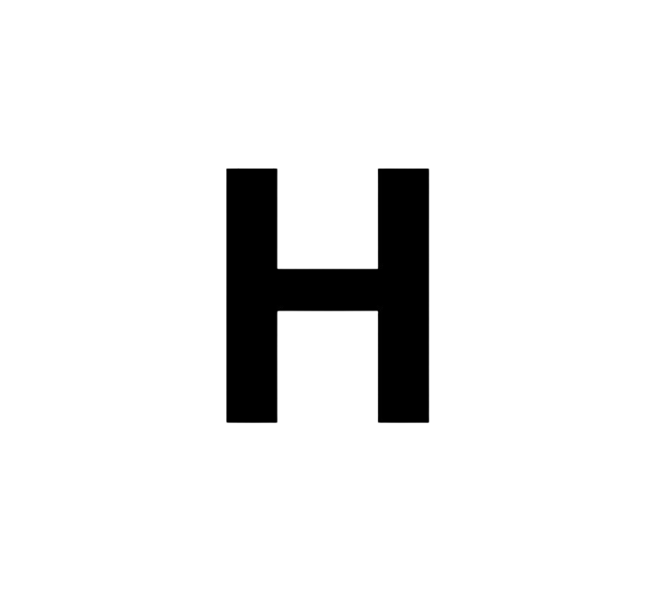
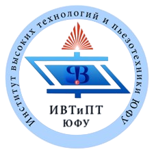

Что делает староста, зачем и для чего нужен наставник, что такое студсовет, нужно ли вступать в профком и что означает непредсказуемая аббревиатура БРС — ответы на все вопросы есть в этом сайте.
information
В нашем сайте есть ответы на все ваши вопросы, касающиеся Вуза

history
В нашем сайте есть ответы на все ваши вопросы, касающиеся Вуза

Информация
В нашем сайте есть ответы на все ваши вопросы, касающиеся Вуза
Институт высоких технологий и пьезотехники был открыт в РГУ в 2001 г. Вместе с научным конструкторско-технологическим бюро "ПЬезоприбор", учебно-методическим центром "Инженерное образование", Центром трансфера технологий и Центром коллективного пользования институт образует единый учебно-научно-инновационно-технологический комплекс "Высокие технологии" ЮФУ. Это новый институт в классическом университете, создание которого продиктовано насущными потребностями быстро развивающейся науки и техники на рубеже 21 века, особенно в областях, находящихся "на стыке" различных наук.
Характерной особенностью подготовки специалистов в институте высоких технологий и пьезотехники является сочетание мощной базовой университетской подготовки студентов по основополагающим дисциплинам, таким как математика, физика, информатика, со специальной подготовкой по техническим дисциплинам. Именно такой подход позволяет обеспечить необходимый уровень современного инженерного образования молодых специалистов.